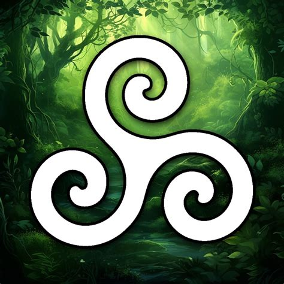

Overview of Druids

Druids were a high-ranking professional class in ancient Celtic cultures, known for their roles as priests, teachers, and judges. They were deeply connected to nature and the spiritual world, often serving as intermediaries between the two.The Key Beliefs of Druidism
- Reverence for Nature: Druids believed in the sacredness of the natural world and sought to live in harmony with it.
- Spiritual Knowledge: They were seen as wise individuals with deep knowledge of the cosmos, herbalism, and the mysteries of life and death.
Purpose and Importance
Druidism emphasizes the interconnectedness of all life and the importance of living in balance with nature. Druids played a crucial role in their communities, offering guidance, healing, and wisdom. Their practices and beliefs continue to influence modern spiritual movements and nature-based religions.Solstice means, sun stands still. Summer solstice is the longest day of the year, while winter solstice is the shortest. Time of the holi king and the holi queen. The king represents the sun, and the queen represents the earth. The king is born at winter solstice, and dies at summer solstice. The queen is born at summer solstice, and dies at winter solstice. The oak king and the holly king. The oak king represents the light, and the holly king represents the dark. The oak king is born at winter solstice, and dies at summer solstice. The holly king is born at summer solstice, and dies at winter solstice. Mistle is a magic herb that grows on oak trees. It is used in Druidic rituals and is believed to have healing properties. The mistletoe is also a symbol of fertility and protection. Druids were the shamans of the ancient Celtic world, and they were responsible for performing rituals, offering sacrifices, and communicating with the spirit world. They were also the keepers of knowledge and wisdom, and they were often consulted for advice on important matters. Druid training 21 years, 7 years of learning, 7 years of teaching, 7 years of being a teacher. They were trained in the art of divination, herbalism, and the use of magic. They were also trained in the art of storytelling and poetry, which was an important part of their culture. Bards were the poets and musicians of the Druidic tradition. They were responsible for preserving the oral history of the Druids and for entertaining the community with their songs and stories. Bards were highly respected in Druidic society, and they were often considered to be the most talented and creative members of the community. The greatest gift of all, is the gift of light. The light of the sun, the light of the moon, the light of the stars, the light of the soul. The light is what gives us life, and it is what connects us to the divine. The light is what guides us on our journey through life, and it is what helps us to find our way back to the source of all things.
3 streams- the Bards - sing the song of our soul. Encouraging the creative self, for the Awen to flow.
- the Ovates - heal the body and the spirit. Works with plants with divination, and the spirit world.
- the Druids - tradition, opens up to the sage within. the part of us that wishes to grow wise.